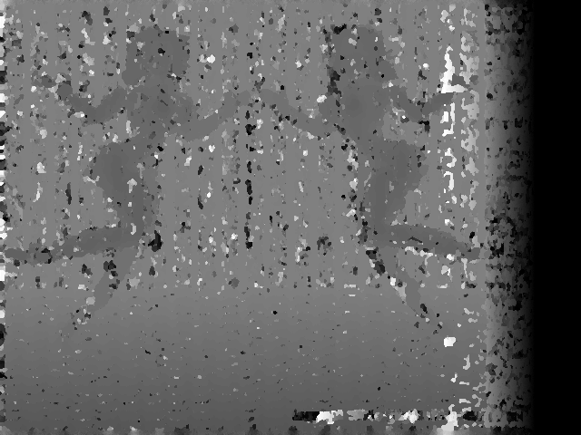
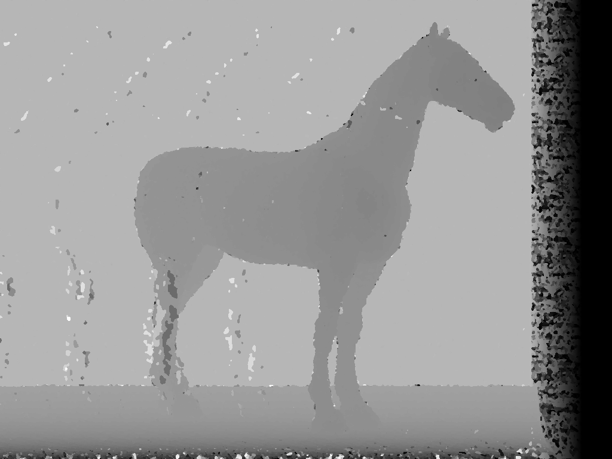
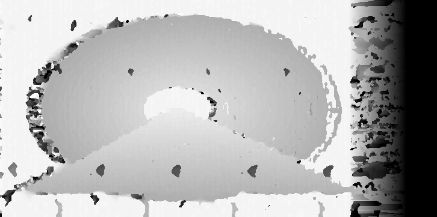

MISE EN EVIDENCE DE L'INFORMATION 3D D'AUTOSTEREOGRAMMES
Exemples de la méthode de recuit simulé.

Danseuses, fenêtre de 1, Tmax= 100 000, Tmin= 1, Npass=5, k= .99

Danseuses, fenêtre de 5, Tmax= 20 000, Tmin= 1, N=5, k= .99

Cheval, fenêtre de 5, Tmax= 20 000, Tmin= 10, N=2, k= .99

Tunnel, fenêtre de 5, Tmax= 60 000, Tmin= 1, N= 5, k= .99
,